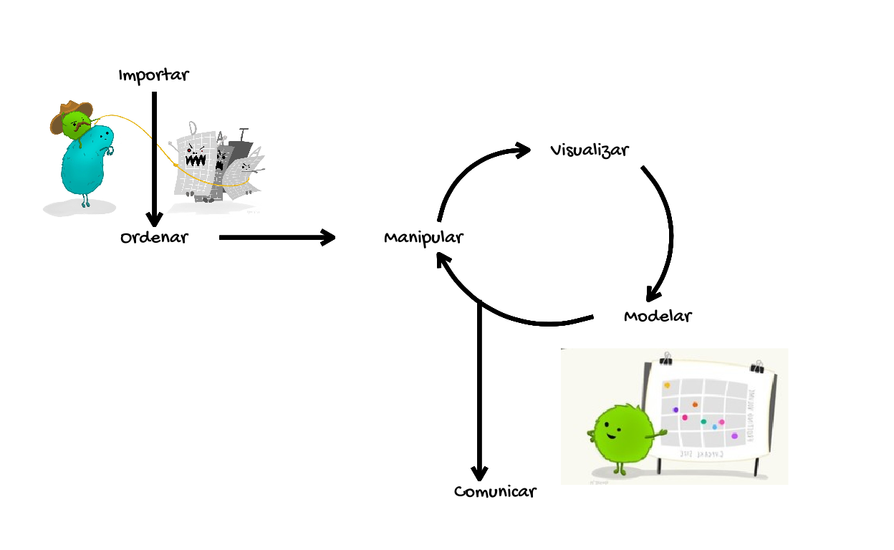
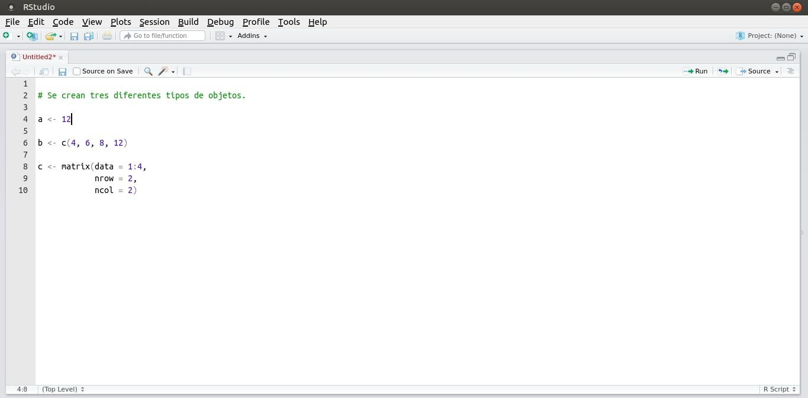

¡Bienvenido!

Descripción
Este curso pretende ser una introducción básica del R. Su objetivo consiste en enseñar habilidades en la limpieza, manipulación y visualización de datos mediante el uso del R. Tenga en cuenta que este curso no pretende ser un sustituto de un curso completo de programación o de estadística.

A lo largo del curso podrá encontrar fragmentos de código para realizar ejemplos y ejercicios de codificación. Abajo encontrara como podrán ser usados:
Fragmentos de código para realizar ejemplos
Los ejemplos contienen código previamente escrito para que pueda explorarlo y ejecutarlo presionando el botón amarillo “Run Code” (ejecutar) en la esquina superior derecha. Puede actualizar el código en cualquiera de los ejemplos presionando “Start Over” (iniciar de nuevo) en la esquina superior izquierda y el código se restablecerá automáticamente al valor predeterminado.
Fragmentos de código para realizar ejercicios de codificación
Aquí se indican ejercicios prácticos de codificación donde se le pedirá que escriba el código manualmente. Si no da con la solución, puede buscar ayuda dando clic en los botones “Solution” (solución) o “Hints” (sugerencias). En la mayoría de los casos el código podrá ser evaluado con el botón “Submit Answer” (Enviar Respuesta), indicándole cuando la respuesta sea acertada.
Ejercicio_códigoTambién se encontrara con el siguiente bloque informativo:
Bloque informativo de aclaración
En ocasiones se dara alguna recomendación sobre un tema. Este bloque se usará para llevar a cabo esto.
Acerca de nosotros
leo4luffy.github.io
jollopezma@unal.edu.co
Leo4Luffy
duvancho321.github.io
dnieves@unal.edu.co
Duvancho321
No dude en comunicarse con nosotros por correo electrónico si tiene preguntas acerca del curso y su contenido.
Tenga en cuenta que este curso está bajo la licencia Creative Commons Attribution-NonCommercial-ShareAlike 4.0 International License. Por tanto el contenido del curso debe acreditarse a sus autores.

1. Una breve introducción al R
1.1 ¿Qué es el R?
R es un lenguaje de programación creado por Robert Gentleman y Ross Ihaka en el año de 1992. Ambos creadores le dieron el nombre de R al lenguaje implementado por las iniciales de sus nombres (a modo de broma).

Se trata de un lenguaje interpretado o de script, con tipado dinámico, multiplataforma y orientado a objetos:
Lenguaje interpretado o de script: se ejecuta utilizando un programa intermedio llamado intérprete (IDE).
Orientado a objetos:
Rrealiza acciones objetos (un número, un conjunto de datos, una palabra o un resumen estadístico como una media o varianza).
Ejemplo 1.1.1
a <- 12
b <- c(4, 6, 8, 12)
c <- matrix(data = 1:4,
nrow = 2,
ncol = 2)Para crear nuevos objetos en R, se debe hacer la asignación del objeto. La asignación de objetos es la forma de almacenar información. Para hacer una asignación, se suele emplear el simbolo <-. Por ejemplo la notación a <- …, asigna … (lo que se quiere almacenar) al objeto a.
Multiplataforma: el intérprete de
Restá disponible en muchas plataformas (Linux, Windows, UNIX, Mac OS, etc), por lo que podrá ejecutarse en muchos computadores.Tipado dinámico: se refiere a que no es necesario declarar el tipo de dato. A su vez,
Res fuertemente tipado.
Ejemplo 1.1.2
a <- 'Hola'
typeof(a)
b <- 1L
typeof(b)
c <- 12.3
typeof(c)
d <- 1 + 2i
typeof(d)
e <- c(FALSE, TRUE)
typeof(e)1.2 ¿Por qué usar R?
El lenguaje de programación R se puede obtener y distribuir de forma gratuita, debido a que se encuentra bajo Licencia Pública General del proyecto GNU. Por lo tanto es un programa de código abierto y gratis.
R cuenta con una comunidad de usuarios alrededor del mundo. Al contar con una comunidad es posible dar con la solución de algún problema de programación, así como el desarrollo de paquetes utilizados en temas específicos, desarrolados por especialistas en alguna parte del mundo.

Finalmente, el uso del R garantiza que otro investigador pueda repetir el experimento, comprobar los resultados obtenidos y estar en la condición de ampliar o refutar las interpretaciones del estudio realizado.

¡No se desanime! Los lenguajes de programación como el R no son sencillos de aprender, pero con trabajo y motivación vera como en poco tiempo se lograrán grandes avances.
1.3 Instalación de R base y RStudio
R base es el software básico que contiene el lenguaje de programación R. RStudio es un software que facilita la programación en R.
R base:
- Windows: la instalación de
Rbase en windows se realiza a través de la CRAN (Comprehensive R Archive Network). - Linux: la instalación de
Rbase en Linux se realiza escribiendo el siguiente código en la terminal:
sudo apt-get update
sudo apt-get install r-base r-base-dev

RStudio:
Se puede instalar directamente desde la página de RStudio. Hay se encuentran los archivos de instalación tanto en windows como en Linux.
Cuando se abre RStudio se pueden ver cuatro paneles:
- La fuente: la libreta de notas para el código

Un texto insertado en el código el cual es omitido en la ejecución, se denomina como comentario. En R, un comentario es un texto que comienza con el símbolo # y se extiende hasta el final de la línea. Este permite que R no intente interpretarlo como parte del código.
- La consola: el corazón de
R

- El ambiente / el historial


- Los archivos / las gráficas / la ayuda / los paquetes


1.4 Los paquetes en R
Los paquetes en R son colecciones de funciones y conjunto de datos desarrollados por la comunidad. Un paquete de R incluye código, documentación para su uso y conjuntos de datos.
Existen dos formas de instalar nuevos paquetes en R:
- Descargarlos de la CRAN (Comprehensive R Archive Network) por medio de la función
install.packages().
Ejemplo 1.4.1

install.packages('tidyr', 'dplyr', 'ggplot2')- Mediante el uso del paquete
devtools, el cual permite instalar paquetes alojados en distintos servidores:
install_bioc()desde Bioconductor,install_cran()desde CRAN,install_git()desde un repositorio git,install_github()desde GitHub.
Ejemplo 1.4.2
install.packages('devtools')
devtools::install_github('tidyverse/dplyr')Una vez haya instalado un paquete, estará en la computadora. Si se desea usar una función o un conjunto de datos del paquete instalado, debe cargar el paquete en la sesión de R. Para esto, existen dos formas:
- Con la notación
nombrepaquete::nombrefunción()para hacer un uso temporal de la función o conjunto de datos.
Ejemplo 1.4.3
dplyr::starwarsUna ventaja del método anterior es que es inmediatamente claro para cualquier persona que lea el código qué paquete contiene la función. Sin embargo, un inconveniente es que si usa una función de un paquete con frecuencia, lo obliga a volver a escribir constantemente el nombre del paquete.
- Cargándolo en la memoria del computador mediante el uso de la función
library()si su uso es permanente.
Ejemplo 1.4.4
library(dplyr)
Datos_starwars <- starwarsPara acceder a la descripción de un paquete desde R se puede emplear las funciones packageDescription() y help().
Ejemplo 1.4.5
packageDescription('dplyr')
help(package = 'dplyr')Otras funciones que permiten la gestión de los paquetes instalados en el computador:
installed.packages() # Para ver que paquetes se tienen instalados.
remove.packages('dplyr') # Si se desease eliminar un paquete (en este caso el paquete dplyr).
old.packages() # Para comprobar que paquetes necesitan ser actualizados.
update.packages() # Para actualizar todo los paquetes instalados.1.5 Trabajando con proyectos
Un directorio de trabajo en R es el lugar en la computadora en el que se encuentran los archivos con los que se esta trabajando. Es el lugar donde R buscara los archivos para importarlos y al que serán exportados.
Con la función getwd() se puede encontrar el directorio en el que se esta trabajando.
Ejemplo 1.5.1
getwd() # Da como resultado la ruta "/home/leo/Escritorio/github/Un_curso_amigable_sobre_R".Para cambiar el directorio de trabajo se puede emplear la función setwd(), dando como argumento la ruta del directorio que se quiere usar.
Ejemplo 1.5.2
setwd(dir = "/home/leo/Escritorio/Curso_estadística") # Se cambia el directorio de trabajo a la carpeta Curso_estadistica.Sin embargo como señala Jenny Bryan, con la función setwd() es practicamente imposible para cualquier otra persona que no sea el autor original del código R, en su computadora, hacer que las rutas de archivo funcionen. La solución consistiría en trabajar con proyectos.
Un proyecto es un directorio de trabajo nombrado como un archivo .Rproj. Cuando se abre un proyecto, el directorio de trabajo se establecerá automáticamente en el directorio en el que se encuentra el archivo .Rproj.
El archivo .Rproj se puede crear yendo a “File” (archivo) → “New Project…” (nuevo proyecto) en RStudio, que luego se asocia con la carpeta o directorio especificado.
Configurar un directorio de trabajo correctamente también ayuda a desarrollar buenos hábitos que conducen a un análisis reproducible.
Estructurando el directorio de trabajo
Además de usar proyectos, también es una buena práctica estructurar el directorio de una manera que ayude a cualquier persona con la que se esta colaborando, o una versión futura de usted intente reproducir algunos análisis.

2. Operaciones básicas en R
Antes de realizar operaciones sobre algunos objetos en R, veamos cuales de estas podemos realizar.
- Suma y diferencia (+, -)
- Producto y división (*, /)
- Potencia (^, **)
- Residuo (%%)
- Mayor, mayor o igual, menor, menor o igual, igual y diferente que (>, >=, <, <=, ==, !=)
- Conjunción (&, &&), disyunción (|, ||)
Indexación
Dentro de los múltiples objetos de R sean estos simples como un vector o compuestos como un dataframe debemos tener claro el manejo de nuestra información, por lo cual es necesario saber cómo acceder a ella, segmentarla, seleccionarla y/o cambiarla. Para cualquiera de los casos utilizamos la indexación, lo cual significa que los elementos de nuestros objetos están identificados usualmente mediante un índice entero que inicia con el número uno [1].
En las secciones posteriores exploraremos cada objeto con detalle, abordando las distintas operaciones que podemos realizar sobre cada uno de ellos incluyendo la segmentación, selección y Modificación.
[1] "[1][2][3][4][5][6][7][8][9]"[1] 11 12 13 14 15 16 17 18 19 [,1] [,2] [,3] [,4] [,5]
[1,] 1 6 11 16 21
[2,] 2 7 12 17 22
[3,] 3 8 13 18 23
[4,] 4 9 14 19 24
[5,] 5 10 15 20 25Coerción
Existe una forma de convertir el tipo de un vectoro matriz a otro tipo y para ello contamos con funciones base del tipo as.*
| Función | Acción |
|---|---|
as.character() |
Convertir objetos a tipo caracter |
as.complex() |
Convertir objetos a tipo complejo |
as.data.frame() |
Convertir objetos a tipo dataframe |
as.Date() |
Convertir objetos a tipo fecha |
as.double() |
Convertir objetos a tipo doble |
as.factor() |
Convertir objetos a tipo factor |
as.integer() |
Convertir objetos a tipo entero |
as.list() |
Convertir objetos a tipo lista |
as.logical() |
Convertir objetos a tipo lógico |
as.matrix() |
Convertir objetos a tipo matriz |
as.numeric() |
Convertir objetos a tipo numérico |
as.POSIXct() |
Convertir objetos a tipo fecha y hora |
as.vector() |
Convertir objetos a tipo vector |
Funciones de prueba
En algunos casos diferenciar o reconocer el tipo de un vector o matriz que se tiene no es tan simple, en estos casos utilizamos la función typeof(), sin embargo existe también la opción de utilizar funciones que devuelvan valores de TRUE o FALSE. En las funciones base de R se encuentran funciones del tipo is.*. Una alternativa a las funciones base de R son las del paquete purr las cuales son del tipo is_*
| R base | purr |
|---|---|
is.logical() |
is_logical() |
is.integer() |
is_integer() |
is.double() |
is_double() |
is.numeric() |
is_numeric() |
is.character() |
is_character() |
is.list() |
is_list() |
is.vector() |
is_vector() |
Funciones útiles
En R contamos con las conocidas funciones base, muchas con utilidades matemáticas o estadísticas, veamos algunas de ellas que pueden ser muy útiles en cualquier proyecto de análisis.
| Función | Acción |
|---|---|
length() |
Calcula el número de elementos del objeto |
sort() |
Ordena los elementos ascendentemente |
round() |
Redondea los valor sin decimales por defecto |
floor() |
Devuelve el entero más grande que no sea mayor que el número dado |
sqrt() |
Calcula la raíz cuadrada de un vector numérico |
sum() |
Calcula la suma de los elementos del objeto |
prod() |
Calcula la producto de los elementos del objeto |
abs() |
Devuelve el valor absoluto de un vector numérico |
mean() |
Calcula la media de un vector numérico |
median() |
Calcula la media de un vector numérico |
sd() |
Calcula la desviacion estandar de un vector numérico |
IQR() |
Calcula el rango intercuartílico de un vector numérico |
var() |
Calcula la varianza estandar de un vector numérico |
cor() |
Calcula la correlación de dos vectores numéricos |
quantile() |
Devuelve los cuantiles seleccionados de un vector numérico |
2.1 Operaciones con vectores
Antes de iniciar con ejemplos y ejercicios debemos tener presente que un vector es una colección de elementos de la misma clase atómica, es decir que un vector puede contener n elementos del mismo tipo, ya sean estos números, caracteres, factores o lógicos, nunca podrán ser de dos o más tipos. A medida que veamos ejemplos y realicemos ejercicios aprenderemos distintas formas de crear vectores.
A continuación veremos vectores con las distintas clases atómicas y qué sucede si intentamos mezclarlas.
Ejemplo 2.1.1
#Vector numérico
num <- c(1,2,3,4,5)
num
#Vector de caracteres
let <- c("a","b","c","d","e","f")
let
#Vector de Factores
fac <- factor(c("f1","f2","f3","f2","f1"))
fac
#Vector logico
log <- c(T,F,T,T,T,F)
log
#mezcla de clases atomicas
c(num,let)
c(num,log)Como vimos en la última parte al mezclar dos clases atómicas no obtenemos un error, sin embargo los vectores mezclados toman la clase solo de uno de ellos (la más compleja), en el primero vemos como los números de num quedan entre comillas, lo cual implica que ahora son caracteres, de igual forma en el vector dos vemos que los valores lógicos de log son convertidos a su equivalente numérico.
Ahora vamos con uno ejemplos en los cuales generaremos un vector de prueba y realicemos algunas operaciones aritméticas básicas.Sean estas suma, resta, división, multiplicación y exponenciación.
Operaciones de suma.
Ejemplo 2.1.2
#Vector de prueba
x <- c(1:8)
x
#Suma sobre cada elemento del vector de prueba
test_1 <- x+2
test_1
#Suma repetitiva sobre los elementos del vector de prueba
test_2 <- x + c(10,20)
test_2
#Suma uno a uno sobre nuestro vector de prueba
test_3 <- x + c(8:1)
test_3De igual forma podemos utilizar la resta, te invito a que restablezcas el vector de prueba x a partir de los vectores test_1, test_2, test_3. Para ello copia los vectores que realizamos en el fragmento de código anterior y crear de nuevo el vector x. Vamos confio en que podrás hacerlo.
Ejercicio 2.1.1
test_1 <- c(1:8)+ 2
test_2 <- c(1:8) + c(10,20)
test_3 <- c(1:8) + 8:1
# Ahora es tu turnotest_1 - 2
test_2 - c(10,20)
test_3 - 8:1grade_code("Excelente lo lograste, sigamos adelante")Vamos ahora con operación de producto.
Ejemplo 2.1.3
#Vector de prueba
y <- seq(2,20,2)
y
#Producto sobre cada elemento del vector de prueba
test_1 <- y*2
test_1
#Producto repetitivo sobre los dos elementos del vector de prueba
test_2 <- y * c(5,7)
test_2
#Producto uno a uno sobre nuestro vector de prueba
test_3 <- y * 10:1
test_3Ya que vimos cómo funciona el producto en R, te propongo que utilizando la operación inversa restablezcas el vector de prueba y. Intentalo, se que podrás hacerlo.
Ejercicio 2.1.2
test_1 <- seq(2,20,2) * 2
test_2 <- seq(2,20,2) * c(5,7)
test_3 <- seq(2,20,2) * 10:1
# Ahora es tu turnotest_1 / 2
test_2 / c(10,20)
test_3 / 10:1grade_code("Excelente lo lograste, sigamos adelante")Hagamos un ejercicio un poco más corto para la potenciación y su operación inversa. Halla la séptima potencia del 4 y la raíz cúbica del 27, te dejamos un par de ejemplos para que puedas guiarte.
Ejercicio 2.1.3
8**5
16**(1/4)
# Ahora es tu turno4**7
27**(1/3)grade_code("Excelente lo lograste, sigamos adelante")Ahora hagamos un par de ejercicios de operaciones lógicas, los cuales son muy útiles en cualquier campo de la programación y del análisis. Crearemos un vector de prueba y de él seleccionaremos los elementos que cumplan la condición específica de ser menores a 20.
Ejemplo 2.1.4
#Vector de prueba
vec <- seq(1,100,length.out = 20)
vec
#Condición
filt_1 <- vec < 20
filt_1
#Selección
vec_filt <- vec[filt_1]
vec_filtEncontremos ahora dentro de un vector de prueba los números diferentes de los pares, de igual manera te invito a que encuentres los números pares modificando el ejercicio planteado.
Ejercicio 2.1.4
#Vector de prueba
vec <- seq(1,150,3)
vec
#Condición y selección
vec[vec%%2 != 0]
# Ahora es tu turnovec[vec%%2 == 0]grade_code("Excelente lo lograste, sigamos adelante")Veamos ahora una ejercicio con dos condiciones simultáneas y deberás realizar una operación similar para nuestro vector de prueba, en el cual elegirás los valores mayores a 15 y menores a 80.
- Recuerda los operadores lógicos que nombramos en la parte inicial de esta sección.
Ejercicio 2.1.5
#Vector de prueba
vec <- seq(1,100,length.out = 20)
vec
#Condición y selección
vec[vec>90 | vec<45]
# Ahora es tu turnovec[vec>15 & vec<80]grade_code("Excelente lo lograste, sigamos adelante")Trabajemos ahora algunos ejercicios de indexación que nos permitan segmentar y modificar nuestros vectores. veamos cómo tomar una sección de nuestro vector de prueba y además modificar algunos de sus valores.
-
Recuerda que la indexación en R inicia con uno
[1]
Ejemplo 2.1.5
#Vector de prueba
vec <- letters
vec
#Seleccion
vec[1:10] #primeras 10 letras
vec[-16:-1] # ultimas 10 letras
#Modificación
vec[1] = "letra.a" #solo la primera posición
vec
vec[c(1,26)] = c("la.letra.a","la.letra.z") #multiples posiciones
vecExclusivamente para los ejemplos de selección de los primeros y los últimos elementos de un objeto podemos utilizar las funciones head() y tail() respectivamente.
#Vector de prueba
vec <- letters
#Seleccion
head(vec,10)#primeras 10 letras
tail(vec,10)#ultimas 10 letras Observemos un ejemplo en el que se acceda a elementos de un vector para hacer operaciones con estos.
Ejemplo 2.1.6
#Vectores de prueba
vec1 <- 20:40
vec2 <- letters
#Operaciones
vec1[5]+vec1[21] #operaciones aritmeticas uno a uno
vec1[c(5,10)]+vec1[c(18,21)] #operaciones aritmeticas
paste0(vec2[3],vec2[18],vec2[1],vec2[14]) #concatenar caracteres Como último ejemplo de esta sección visualicemos las conversiones y veamos su efectividad utilizando las funciones de prueba.
Ejemplo 2.1.7
#Vectores de prueba
vec1 <- 20:40
vec2 <- letters
vec3 <- c(T,F,T,T,T,F)
#conversiones
test_1 <- as.character(vec1)
test_2 <- as.factor(vec2)
test_3 <- as.numeric(vec3)
#funciones de prueba
is.character(test_1)
is.factor(test_2)
is.numeric(test_3)Como último ejercicio de esta sección deberás generar dos vectores uno que corresponda a la secuencia de números de de 50 a 75 con una longitud de 20 elementos y otro vector con los números del 35 al -8, estos vectores tendrán el nombre de vec1 y vec2 respectivamente. filt1 será un vector que cumpla la condición de números mayores a 64 de vec1, mientras que filt2 será la selección de los números pares de vec2. para filt1 calcularemos la media y para filt2 obtendremos la suma de los valores absolutos de las posiciones 2,3,7,19,20,21 y 22.
- Recuerda lo aprendido anteriormente y ten presente las funciones útiles nombradas al inicio de esta sección.
Ejercicio 2.1.6
#Vector de prueba
vec1 <-
vec2 <-
filt_1 <-
filt_2 <- vec1 <- seq(50,75,length.out = 20)
vec2 <- 35:-8
filt_1 <- vec1 > 64
filt_2 <- vec2[vec2 %% 2 ==0 ]
mean(filt1)
sum(abs(filt_2[c(2,3,7,19:22)]))grade_code("Excelente lo lograste, sigamos adelante")2.2 Operaciones con matrices
Ahora trabajaremos con las matrices, que desde la perspectiva de R son vectores con el atributo dim definido como un vector entero de dos elementos (número de filas y número de columnas). Las matrices son útiles para almacenar muchos datos y son bastante similares a las hojas de cálculo de Excel, puede pensar en ellas como un conjunto de n vectores de la misma longitud.
En lo que se refiere a matrices la indexación funciona nombrando primero las filas y después las columnas, de tal forma que teniendo una matriz M de dimensiones mxn tendremos m filas y n columnas. Si utilizamos el comando M[1,] obtendremos la primera fila y al utilizar M[,1]obtendremos la primera columna. Más adelante abordaremos ejercicios que nos permitan manejar e identificar las columnas y filas de una matriz.
[,1] [,2] [,3] [,4] [,5]
[1,] 1 6 11 16 21
[2,] 2 7 12 17 22
[3,] 3 8 13 18 23
[4,] 4 9 14 19 24
[5,] 5 10 15 20 25[1] "M[1,]"[1] 1 6 11 16 21[1] "M[,1]"[1] 1 2 3 4 5Generalmente las matrices en R tienen connotación matemática y pese a ser utilizadas para almacenar información, debemos recordar que todos sus elementos sólo pueden pertenecer a un solo tipo ya sea este numérico, lógico o caracter. Teniendo presente esto veamos operadores y funciones que pueden resultarnos útiles en el contexto matemático y operativo de R.
| Función | Acción |
|---|---|
dim(M) |
Dimesión de la matriz |
t(M) |
Transpuesta de la matriz |
det(M) |
Determinate de la matriz |
solve(M) |
Inversa de la matriz |
diag(M) |
Diagonal de la matriz |
M1%*%M2 |
Producto matricial |
colSums(M) |
Suma de colunnas de la Matriz |
rowSums(M) |
Suma de filas de la Matriz |
cbind() |
Unir vectores por columnas |
rbin() |
Unir vectores por filas |
Generemos una matriz de prueba y realicemos algunas operaciones sobre esta, recordando que podemos operar sobre filas y/o columnas. Iniciemos con operaciones aritméticas básicas con vectores.
Ejemplo 2.2.1
#Matriz de prueba
m <- matrix(11:30,nrow = 5)
m
#Producto sobre cada elemento de la matriz de prueba
test_1 <- m*3
test_1
#Potencia repetitiva sobre los elementos de la matriz de prueba (columna)
test_2 <- m **c(2,3)
test_2
#Suma sobre la matriz de prueba (columna)
test_3 <- m + seq(7,1,length.out=20)
test_3Ahora veamos cómo funcionan las operaciones entre matrices.
Ejemplo 2.2.2
#Matriz de prueba 1
m1 <- 21:40
dim(m1) <- c(5,4)
#Matriz de prueba 2
m2 <- cbind(1:5,6:10,11:15,16:20)
#suma de matrices
m1 + m2
#Producto uno a uno
m1*m2
#Producto matricial
m1 %*% t(m2)Tratemos de ver otras operaciones directamente con ejercicios. Te invito a que generes m1 del ejercicio anterior utilizando la función rbind(), m2 utilizando la función matrix() y calcules el producto matricial de m1 traspuesta con m2 nombrandolo m3. Por último calcula la suma de la diagonal de m3.
Ejercicio 2.2.1
#Matriz de prueba 1
m1 <-
#Matriz de prueba 2
m2 <-
#Producto Matricial
m3 <-
#suma de la diagonal#Matriz de prueba 1
m1 <- rbind(seq(21,36,5),
seq(22,37,5),
seq(23,38,5),
seq(24,39,5),
seq(25,40,5))
#Matriz de prueba 2
m2 <- matrix(1:20,nrow = 5)
#Producto Matricial
m3 <- t(m1) %*% m2
#suma de la diagonal
sum(diag(m3))grade_code("Excelente lo lograste, sigamos adelante")En el siguiente ejemplo, calcularemos la suma de los valores de cada columna y determinaremos su representación en porcentaje de la suma calculada. El porcentaje lo aproximáremos a dos cifras decimales y haremos un ejercicio de indexación con este resultado imprimiendo un vector con los resultados de la diagonal.
Ejemplo 2.2.3
#Matriz de prueba 1
m <- matrix(seq(18,2,length.out = 16),ncol = 4,byrow = T)
m
#suma de cada columnas
tcol <- colSums(m)
tcol
#Porcentaje de cada columna
pm <- cbind(m[,1]/tcol[1],
m[,2]/tcol[2],
m[,3]/tcol[3],
m[,4]/tcol[4])
pm <- round(pm*100,2)
pm
#Diagonal con funcion
diag(pm)
#diagonal con índice
c(pm[1,1],pm[2,2],pm[3,3],pm[4,4])Hagamos un ejercicio similar al ejemplo anterior, para ello usaremos la matriz m y calcularemos en pm el porcentaje aproximado a tres cifras decimales que cada elemento representa de la suma de cada fila; con él debemos imprimir un vector con los resultados de la diagonal secundaria.
Ejercicio 2.2.2
#Matriz de prueba
m <- matrix(seq(42,2,length.out = 16),ncol = 4,byrow = T)
#Suma de cada fila
tfil <-
#Porcenatje de cada fila
pm <-
#diagonal secundaria
c()#Matriz de prueba
m <- matrix(seq(42,2,length.out = 16),ncol = 4,byrow = T)
#Suma de cada fila
tfil <- rowSums(m)
#Porcenatje de cada fila
pm <- rbind(m[1,]/tfil[1],
m[2,]/tfil[2],
m[3,]/tfil[3],
m[4,]/tfil[4])
pm <- round(pm*100,3)
#diagonal secundaria
c(pm[1,4],pm[2,3],pm[3,2],pm[4,1])grade_code("Excelente lo lograste, sigamos adelante")Veamos otra forma de solucionar el ejercicio anterior.
#Matriz de prueba
m <- matrix(seq(42,2,length.out = 16),ncol = 4,byrow = T)
#matriz transpuesta
tm <- t(m)
#suma de cada columnas,
tcol <- colSums(tm)
#Porcentaje de cada columna
pm <- cbind(tm[,1]/tcol[1],
tm[,2]/tcol[2],
tm[,3]/tcol[3],
tm[,4]/tcol[4])
pm <- round(pm*100,3)
#Diagonal con funcion
c(pm[4,1],pm[3,2],pm[2,3],pm[1,4])Para tener una mayor comprensión de la indexación en las matrices nombremos cada una de las filas y de las columnas de un matriz m, llamemos filas y columnas individualmente; tambien elementos individuales y por último modifiquemos algunos valores.
Ejemplo 2.2.4
#Matriz de prueba 1
m <- matrix(letters[1:25],ncol = 5,byrow = T)
m
#nombre de filas y columnas
rownames(m) <- c("fila1","fila2","fila3","fila4","fila5")
colnames(m) <- c("columna1","columna2","columna3","columna4","columna5")
m
#llamado filas y columnas
m["fila2",]
m[,"columna3"]
#llamado letra "r"
m["fila4","columna3"]
m[4,3]
#modificaciones
m["fila2","columna5"] <- "letraj"
m[5,2] <- "letrav"
mPara finalizar esta sección te invito a que trabajes con la matriz M , primero suma vec1 a la primera columna de la matriz de prueba, después multiplica el elemento de la primera columna y tercera fila por 1.375 y por último multiplica la tercera columna por vec2. Estas operaciones deben hacerse sobre la matriz, de tal forma que al terminar las operaciones y llamar M está guarde las operaciones realizadas.
Ejercicio 2.2.3
#Objetos de prueba
M <- matrix(seq(100,700,length.out = 9),3)
vec1 <- c(3,1.5,3)*100
vec2 <- c(1,.76,1/1.75)
#Operaciones
M#Objetos de prueba
M <- matrix(seq(100,700,length.out = 9),3)
vec1 <- c(3,1.5,1.5)*100
vec2 <- c(1,.76,1/1.75)
#Operaciones
M[,1] <- M[,1] + vec1
M[3,1] <- M[3,1] * 1.375
M[,3] <- M[,3] * vec2
Mgrade_code("Excelente lo lograste, sigamos adelante")2.3 Operaciones con marcos de datos
4. Datos ordenados y el tidyverse

4.1 El tidyverse
El tidyverse es una colección de paquetes R que trabajan en armonía con el objetivo de cubrir todo el espectro de análisis de datos dentro de R. Los paquetes dentro del tidyverse (al menos los abordados en este curso) son:
readr cuyo objetivo consiste en proporcionar una forma rápida y amigable de leer (importar) los datos.

tidyr cuyo objetivo consiste en ayudar a crear datos ordenados.

dplyr que proporciona un conjunto consistente de funciones que ayudan a resolver los desafíos más comunes de la manipulación de datos.
ggplot2 para crear gráficos declarativamente, basado en la denominada gramática de gráficos.

Para usar los paquetes del tidyverse se deben instalar primero. Para esto, los paquetes se pueden instalar de forma individual:
install.packages('readr')
install.packages('tidyr')
install.packages('dplyr')
install.packages('ggplot2')y luego cargarlos una vez se necesiten:
library(readr)
library(tidyr)
library(dplyr)
library(ggplot2)O simplemente se puede instalar y cargar el paquete tidyverse:
install.packages('tidyverse')
library(tidyverse)
tidyverse_update() # Si desea actualizar el tidyverse.4.2 Datos ordenados
En la naturaleza, los conjuntos de datos vienen en muchos formatos diferentes.
Ejemplo 4.2.1
- Conjunto de datos 1
| País | Año | Casos | Población |
|---|---|---|---|
| Afganistán | 1999 | 745 | 19987071 |
| Afganistán | 2000 | 2666 | 20595360 |
| Brasil | 1999 | 37737 | 172006362 |
| Brasil | 2000 | 80488 | 174504898 |
| China | 1999 | 212258 | 1272915272 |
| China | 2000 | 213766 | 1280428583 |
- Conjunto de datos 2
| País | Año | Variables | Valor |
|---|---|---|---|
| Afganistán | 1999 | Casos | 745 |
| Afganistán | 1999 | Población | 19987071 |
| Afganistán | 2000 | Casos | 2666 |
| Afganistán | 2000 | Población | 20595360 |
| Brasil | 1999 | Casos | 37737 |
| Brasil | 1999 | Población | 172006362 |
| Brasil | 2000 | Casos | 80488 |
| Brasil | 2000 | Población | 174504898 |
| China | 1999 | Casos | 212258 |
| China | 1999 | Población | 1272915272 |
| China | 2000 | Casos | 213766 |
| China | 2000 | Población | 1280428583 |
- Conjunto de datos 3
| País | Año | Tasa |
|---|---|---|
| Afganistán | 1999 | 745/19987071 |
| Afganistán | 2000 | 2666/20595360 |
| Brasil | 1999 | 37737/172006362 |
| Brasil | 2000 | 80488/174504898 |
| China | 1999 | 212258/1272915272 |
| China | 2000 | 213766/1280428583 |
- Conjunto de datos 4
| País | 1999 | 2000 |
|---|---|---|
| Afganistán | 745 | 2666 |
| Brasil | 37737 | 80488 |
| China | 212258 | 213766 |
| País | 1999 | 2000 |
|---|---|---|
| Afganistán | 19987071 | 20595360 |
| Brasil | 172006362 | 174504898 |
| China | 1272915272 | 1280428583 |
Los conjuntos de datos anteriores muestran los mismos datos organizados en cuatro formas diferentes. Sin embargo el conjunto de datos que cumple las siguientes tres reglas es mucho más fácil para trabajar en R:

Los datos que satisfacen estas reglas se conocen como datos ordenados.
Ejercicio 4.2.1
Teniendo en cuenta las reglas sobre datos ordenados, ¿cual de los cuatro conjuntos de datos anteriormente mencionados considera cumple con este principio?
Los datos ordenados funcionan bien en R porque R es un lenguaje de programación vectorizado. Los conjuntos de datos en R están construidos a partir de vectores y las operaciones de R están optimizadas para trabajar con vectores. Los datos ordenados aprovechan estas dos características.
4.3 Ordenar los datos con tidyr

Ejercicio 4.3.1